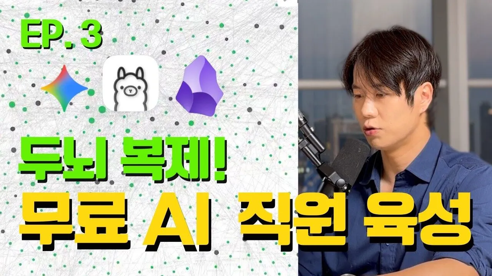
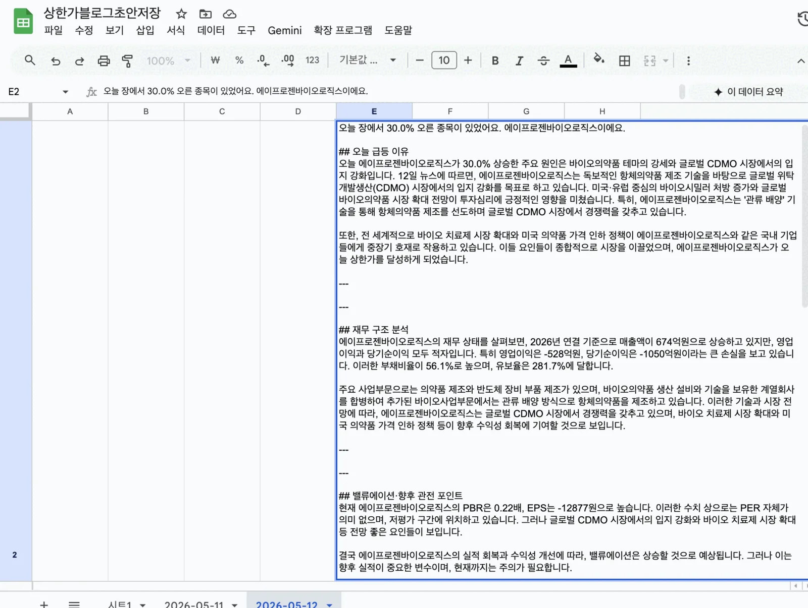

로컬 LLM · 워크플로우 자동화
개인 데이터를 밖으로 보내지 않고, 검증 가능한 AI 워크플로우를 만들 수 있는가.
Ollama 기반 개인 도구 2종 · 로컬 작업 환경 + 블로그 자동화
사실·수치는 API·정규식이 담당하고, RAG는 따로 — 내가 예전에 발행한 양질의 글 220개에서 비슷한 글을 꺼내 참고해, 새 글의 톤·구성을 그 수준으로 맞춘다.
로컬 모델이 쓴 초안을 세 클라우드 모델로 교차 검증해 환각·잘못된 수치를 걸러낸다. 심각하면 업로드를 멈추는, 결정론적 게이트.
01 — 왜 로컬 AI인가
클라우드 LLM을 계속 쓰다 보니 세 가지가 걸렸다. 쓸수록 늘어나는 토큰 비용, 외부 API가 흔들리면 같이 멈추는 의존성, 그리고 개인 노트·투자 메모를 남의 서버로 보내야 하는 보안. "로컬 모델은 느리고 약하다"는 말이 많았지만, 직접 돌려보고 이 셋을 동시에 풀 수 있는지 확인하고 싶었다.
호출량이 늘수록 비용이 비례해 커진다. 로컬 추론은 한 번 받아두면 추가 API 비용이 없다.
핵심 추론을 온디바이스로 두면, 외부 API 장애나 정책 변경에 작업 흐름이 통째로 묶이지 않는다.
개인 노트·투자 메모를 외부 서버에 올리지 않고도 AI를 붙일 수 있는지를 직접 검증했다.
도구 1 · Obsidian 로컬 AI 작업 환경
Obsidian의 현재 노트를 AntiGravity 플러그인이 프롬프트에 자동으로 넣고, Ollama가 Gemma 4를 로컬에서 돌려 답을 다시 노트에 꽂는다. 따로 복붙하지 않아도 지금 작업 중인 맥락 위에서 바로 답이 나온다. 질문 자체보다 "현재 작업 맥락"을 모델에 어떻게 붙이느냐가 체감 품질을 갈랐다.

도구 2 · 상한가 분석 블로그 자동화 — 오케스트레이션
매일 같은 시간, 크론탭이 파이프라인을 깨운다. API로 데이터를 크롤링하고, 그 자료로 프롬프트를 구성해 Ollama 로컬 모델이 초안을 쓰고, GPT·Claude·Gemini가 교차 검증해 환각·잘못된 정보를 걸러내고 품질을 끌어올린 뒤 업로드한다. 단계와 검증 게이트가 고정돼 있어 매번 같은 순서로 재현되고, 어디서 멈췄는지 추적할 수 있다 — "스스로 판단하는 에이전트"보다 신뢰 가능한 결정론적 오케스트레이션을 택했다.

실제 자동 업로드 결과 — 검증 점수·종목명·버전이 Google Sheets에 자동 기록돼, 사람이 마지막 판단을 빠르게 한다.
02 — 기술 딥다이브 · 믿을 수 있는 자동화
투자 글에서 틀린 수치 하나는 치명적이다. 그래서 "한 번에 잘 쓰는 모델"을 찾는 대신, 검색 전략과 검증 구조에 시간을 썼다. 두 가지가 핵심이었다.
처음엔 사실 검색까지 벡터로 하려 했다. 그런데 DART 사업보고서처럼 표·항목 구조가 강한 문서에선, 의미 유사도로 찾은 청크보다 정규식·API 기반 구조 추출이 더 정확했다. 그래서 역할을 갈랐다 — 숫자·항목 같은 사실은 API·정규식으로 정확히 뽑고, RAG는 내가 예전에 발행한 양질의 글 220개를 참고해 새 글의 톤·구성 품질을 그 수준으로 끌어올리는 데만 썼다. 트렌디해서 RAG를 쓰는 게 아니라, RAG가 잘하는 일(품질 참고)에만 맡긴 것이다.
DART 표·항목처럼 구조가 고정된 곳에서 수치를 정확히 집어낸다.
과거 양질의 글을 참고해 새 글의 톤·구성을 끌어올린다. 각자 잘하는 일에.
한 번에 잘 쓰는 모델을 찾기보다 틀린 글이 통과하지 못하는 구조를 먼저 세웠다. GPT·Claude·Gemini 교차 검증이 critical이면 자동 배포를 멈춘다. 수치 환각을 대부분 배포 전에 걸러냈지만, 완전히 없애진 못해 검증 규칙은 계속 손보는 중이다.
03 — 로컬 모델의 한계
로컬이라서 다 되는 건 아니었다. 어디까지 로컬로 충분하고 어디부터 클라우드가 필요한지 직접 부딪혀 익혔고, 그게 '로컬 초안 + 클라우드 검증'이라는 하이브리드 설계로 이어졌다.
2,000 토큰이 넘는 입력은 응답 품질이 급격히 떨어졌다. 긴 문서는 결국 청킹·전처리가 필요했다.
영어보다 한국어 응답이 눈에 띄게 약했다. 모델 선택 기준에 "내 언어에서 쓸 만한가"를 넣어야 했다.
완벽한 대체가 아니라, 로컬로 충분한 곳(초안·개인 데이터)과 클라우드가 나은 곳(검증·품질)을 나눴다.